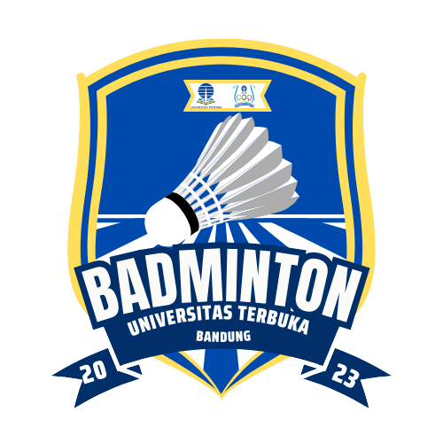

Bulu Tangkis
Bulu Tangkis merupakan salah satu cabor yang ada di UKM Jasmani, Bulu Tangkis berdiri pada tahun 2021

“UKM Jasmani merupakan salah satu Unit Kegiatan Mahasiswa yang ada di Universitas Terbuka Bandung, UKM Jasmani aktif di bidang Olahraga”
“Mewujudkan Unit Kegiatan Mahasiswa yang Produktif, Eksis, serta Berkompeten di bidang Olahraga"
- Mewadahi serta mengelola hobi, minat, dan bakat mahasiswa di bidang sport maupun e-sport
- Menggali potensi dan prestasi mahasiswa sehingga aktif di bidang olahraga
- Andil di kegiatan olahraga internal maupun eksternal kampus
- Menjalin keakraban antar mahasiswa di lingkup internal maupun eksternal
- Menanamkan jiwa sportifitas
Bulu Tangkis merupakan salah satu cabor yang ada di UKM Jasmani, Bulu Tangkis berdiri pada tahun 2021
.png)
Basket merupakan salah satu cabor yang ada di UKM Jasmani, Basket berdiri pada tahun 2023
Voli merupakan salah satu cabor yang ada di UKM Jasmani, Voli berdiri pada tahun 2023
Futsal merupakan salah satu cabor yang ada di UKM Jasmani, Futsal berdiri pada tahun 2014